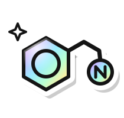

Extract
Documents in, records out
- Input
- 50 years of grant records in mixed formats
- Output
- One searchable database and knowledge graph
OCR, ChromaDB, entity resolution
hassan@dammam:~$ whoami
Machine learning engineer in Dammam, Saudi Arabia. I build systems that find structure in unstructured data.
Reads:
$ cat about.txt
I'm Hassan, a machine learning engineer from Dammam, Saudi Arabia. I studied bioscience and chemistry before computer science, and I still build for the data that real work produces: half-legible archives, compound libraries, air-cargo floors. Two-time academic excellence awardee, and a national AI hackathon winner.
$ cat awards.txt
AgentX National AI Hackathon, 2026
Sole developer and architect in a cross-functional team, in the Logistics and Ports track of SAL's Air Cargo Operations Challenge. The project was Mirsad.
Flinders University, 2023 and 2025
Awarded twice for academic excellence while studying computer science.
$ ls ~/stack
The four elements of my work. Each takes something messy in and hands back something a person, or a program, can act on.
Documents in, records out
OCR, ChromaDB, entity resolution

Molecules in, candidates out
RDKit, XGBoost, graph networks, Prolog
Shipments in, placements out
SimPy, LightGBM, FastAPI
Data in, tools out
Cloudflare Workers, OAuth, PostgreSQL
Projects from industry, research and competition. Most have code you can read, and one is live. The full list is in my résumé (PDF).
303 → 140
Paired simulation over 8 seeds, without and with Mirsad
$ systemctl status mirsad ● mirsad.service: air-cargo decisions Active: active (running) Serves: dashboard, three.js twin Url: mirsad.hassan.sa $ cat mirsad/pipeline placement deterministic, on SimPy forecast occupancy, next 48 hours dwell LightGBM autonomy Jev, fail-closed gate llm words only, never numbers
71% → 14%
AgentX National AI Hackathon 2026, 3rd place
An AI decision layer for air-cargo storage
Built for SAL's Air Cargo Operations Challenge, where I was the sole developer and architect. Placement is deterministic and runs on a SimPy simulator, with a 48-hour occupancy forecast and a LightGBM model of how long each shipment stays. TypeSafe's Jev, a System One model, sets how much autonomy each action gets, behind a rules gate that fails closed. The language model never produces a number.
It ships as a FastAPI service with live simulation, a React dashboard, a three.js digital twin, a chat agent backed by HUMAIN and an integration layer for the cargo operations system's API.
SimPyLightGBMFastAPIReactthree.js
Capstone project, Flinders University
Explainable QSAR for neuropsychiatric drug discovery
Predicts TAAR1 receptor ligand activity across roughly 3,000 compounds. The pipeline builds 3D conformers, structural descriptors and pharmacophore patterns, compares random forest, XGBoost, a multilayer perceptron and message-passing graph neural networks, and pairs them with symbolic inference in Prolog so every candidate comes with a reason.
~3,000 compounds4 model familiesProlog
Research and development internship, NovitaTech
Document intelligence for 50 years of research grants
As sole developer, I built a five-stage pipeline that turned roughly 1,000 grant awards in inconsistent formats into one queryable database. A locally hosted model handles OCR, ChromaDB embeddings drive retrieval, entity resolution against DOI, PubMed and ORCID links researchers to their grants and papers, and a RAG stage recovers fields the records left out. A review screen with a person in the loop and an analytics dashboard replaced a slow manual process.
50 years~1,000 awards5 stages
Model Context Protocol tools for a national economic dataset
A serverless MCP server on Cloudflare Workers that gives LLM clients analytical and forecasting tools over a large national economic dataset, with OAuth sign-in, a PostgreSQL data layer and third-party API integrations.
Cloudflare WorkersOAuthPostgreSQL
Permissioned blockchain tracking on Hyperledger Fabric
Smart contracts on a permissioned network that track medicines between supply chain stakeholders. Dockerised chain nodes, a Go and Node.js backend, Redis-cached microservices, role-based access and REST APIs for end-to-end traceability.
Hyperledger FabricGoNode.jsRedis
$ ls ~/projects --more
Keep scrolling to move through the yearsScroll sideways to move through the years
Click or drag on the board to add points. k-means sorts them into groups and redraws the boundaries as it goes, and the log on the right prints every step.
Conway's Game of Life. Click to reseed. I also wrote a multithreaded one in Java.
Available for work
I'm looking for machine learning and software engineering roles, and I'm glad to talk about research collaborations. Email reaches me fastest.